scpviz Step-by-Step Protocol (Real Test Data)
This guide uses a real fixture from the tests folder and enumerates each required button action.
Dataset used:
Source type: DIA-NN
tests/test_diann.parquetSource type: DIA-NN
Step 1 — Launch app
- Run
python -m dash_app.app. - Open
http://127.0.0.1:8050.
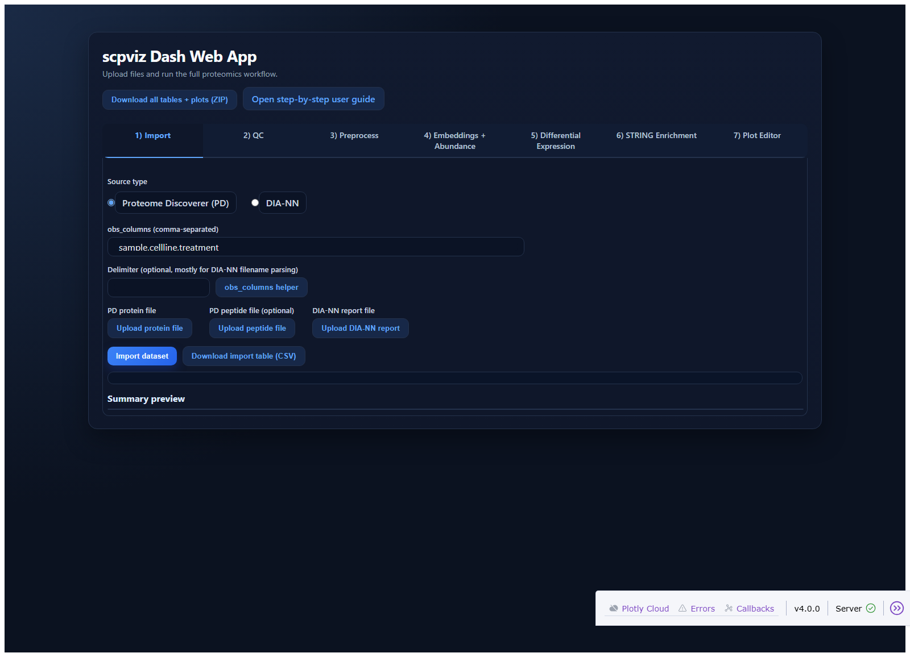
Step 2 — Upload test file
- Open tab 1) Import.
- Select source type DIA-NN.
- Upload
tests/test_diann.parquetvia DIA-NN upload button.
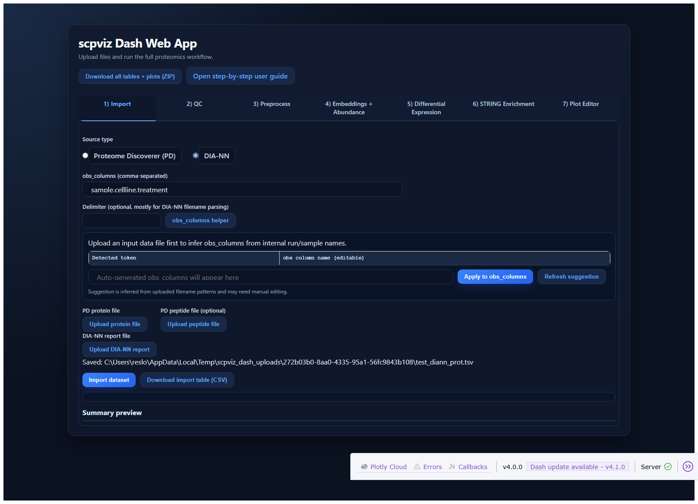
Step 3 — Required: use obs helper
- Click obs_columns helper.
- Click Apply to obs_columns.
- Do not skip this step. Proper imports should apply helper-generated
obs_columnsbefore import.
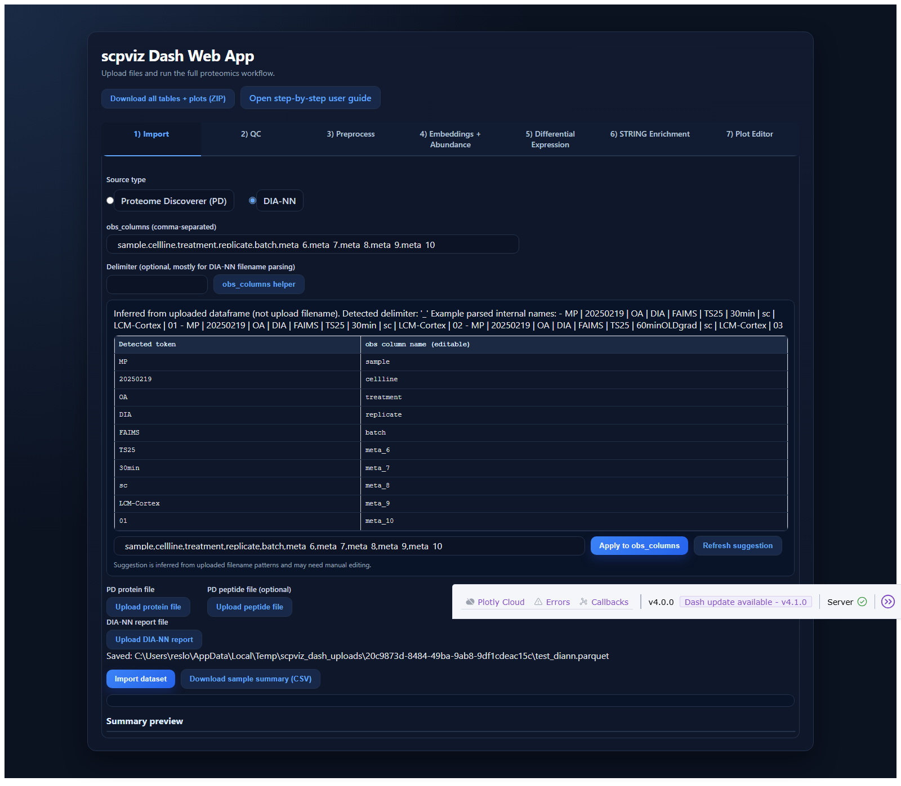
Step 4 — Import dataset
- Click Import dataset.
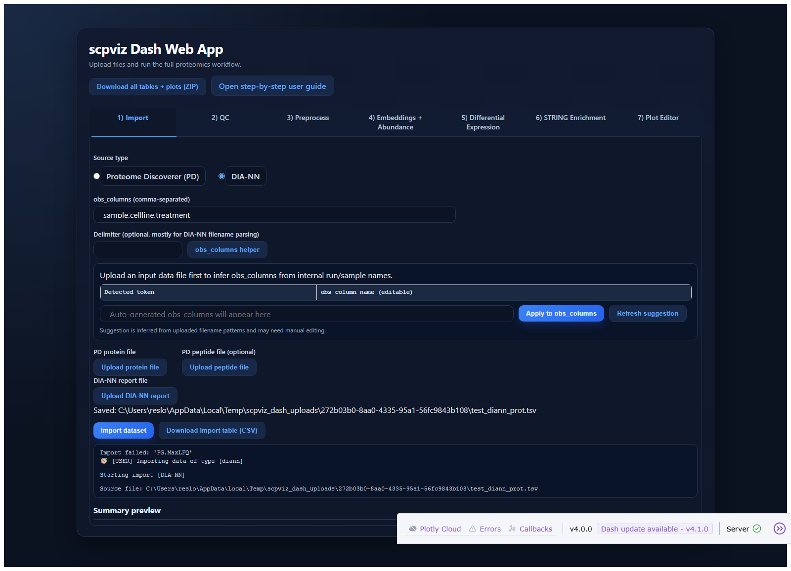
Step 5 — Refresh QC plots
- Open tab 2) QC.
- Click Refresh QC plots.
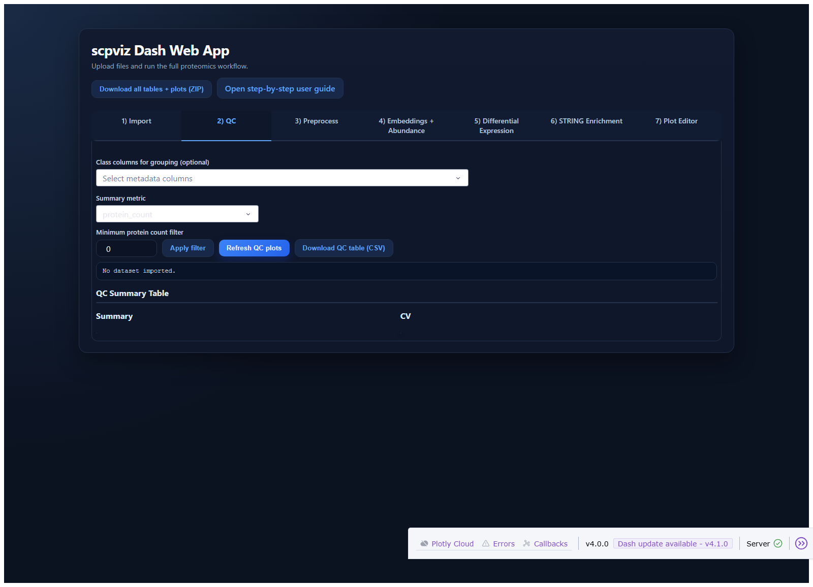
Step 6 — Run preprocessing
- Open tab 3) Preprocess.
- Click Run preprocessing.
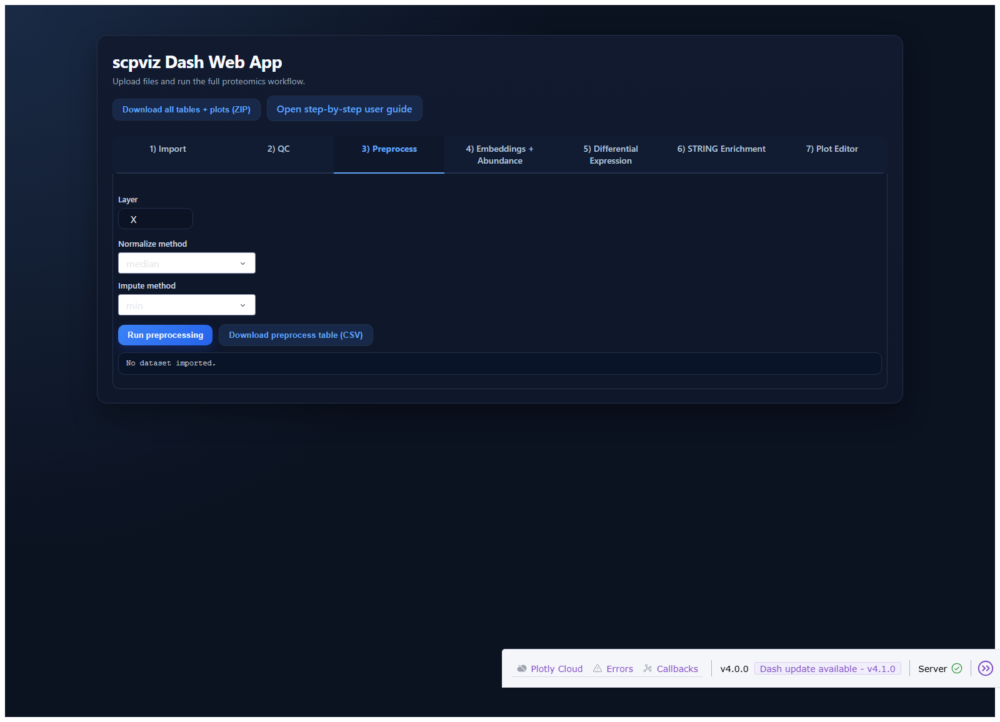
Step 7 — Compute embeddings and abundance plots
- Open tab 4) Embeddings + Abundance.
- Click Compute embeddings + plots.
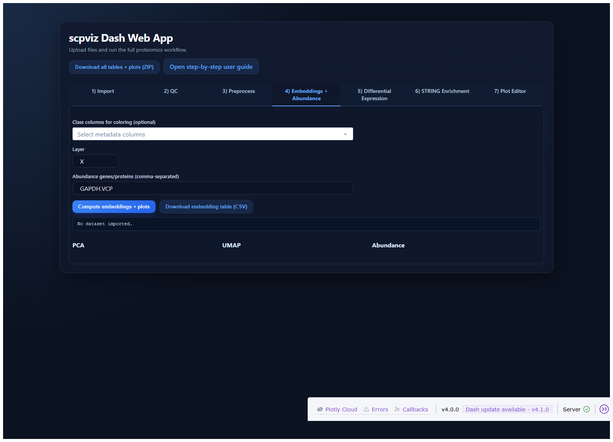
Step 8 — Run DE volcano
- Open tab 5) Differential Expression.
- Click Run DE + volcano.

Step 9 — Add label from selection/click
- Select or click point(s) in volcano plot.
- Click Add labels from selection/click.
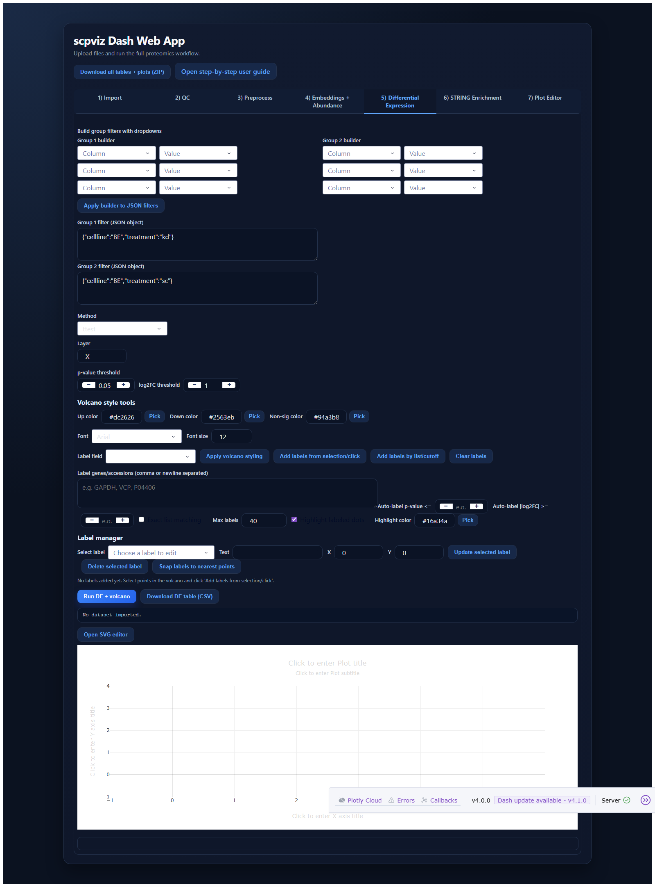
Step 10 — Run enrichment and load STRING SVG
- Open tab 6) STRING Enrichment.
- Click Refresh DE keys.
- Select a DE key.
- Click Run functional enrichment.
- Click Refresh functional keys.
- Select a functional key.
- Click Load STRING SVG.
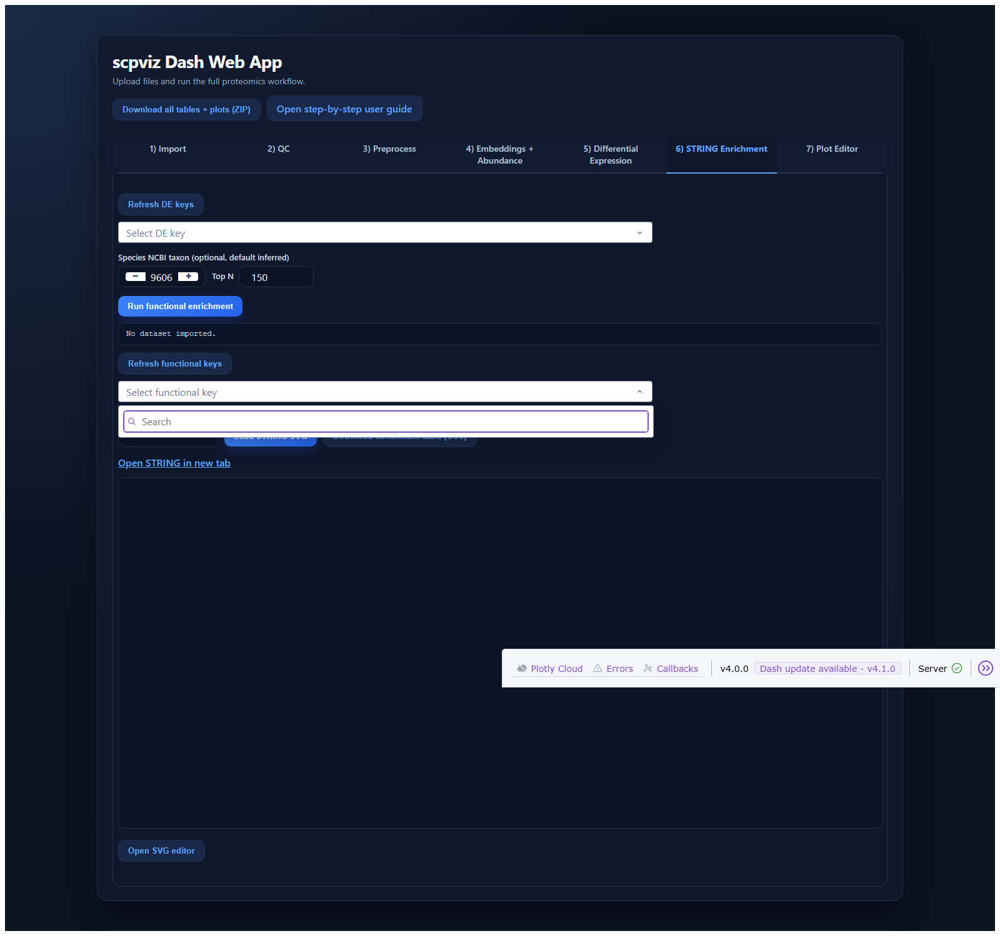
Step 11 — Open editor from enrichment
- Click Open SVG editor in tab 6.
- Confirm tab 7) Plot Editor opens.
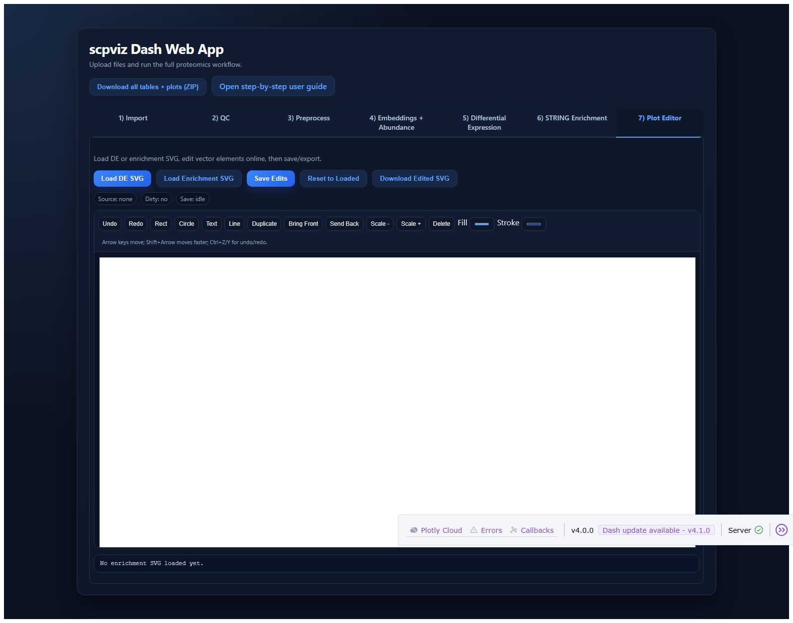
Step 12 — Save editor changes
- In tab 7, click Save Edits.

Step 13 — Export full bundle
- Click top button Download all tables + plots (ZIP).
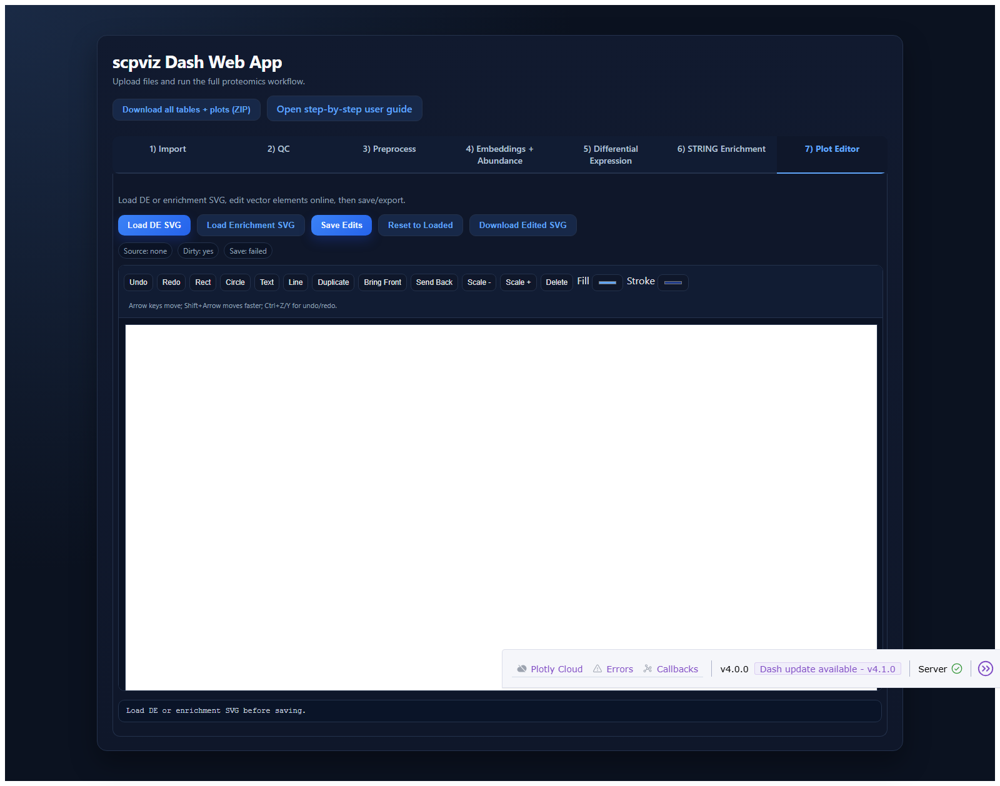